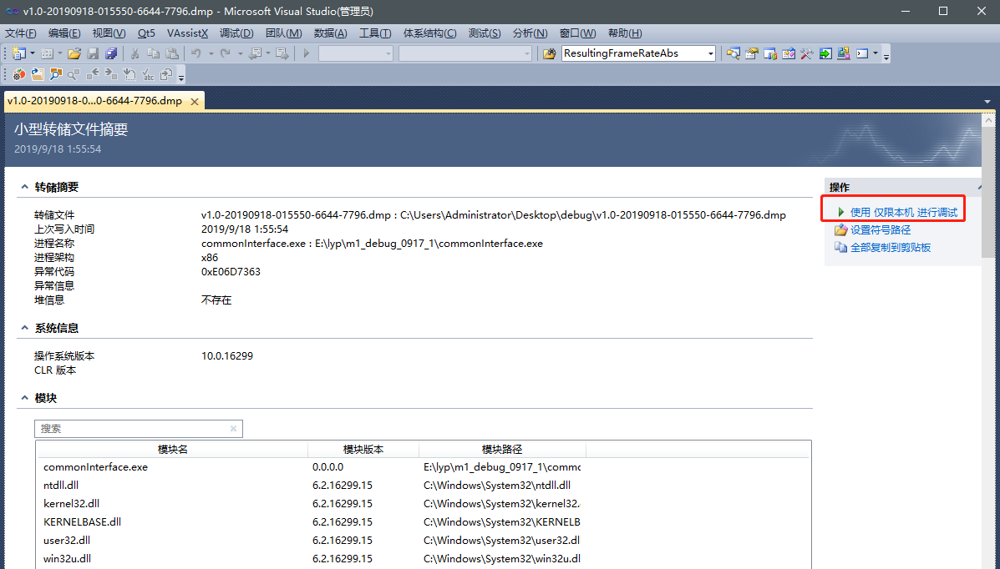

最近在开发相机项目（项目细节由于公司保密就不介绍了），程序运行5个来月以来首次出现msvcr100.dll故障等问题，于是乎开始了分析之路，按照度娘上的一顿操作，期间也是出现了各种不一样的问题，现总结了遇到的问题如：
问题事件名称: APPCRASH
故障模块名称: MSVCR100.dll
现场遇到的情况基本都是这两类
主要说一下我走过的历程，心酸只有自己知道，排查问题难免浮躁，但一定要沉得住，浮躁主要有以下几点：
以上若还没解决问题，此时一定不要再纠结库（不要以为库版本不对），一定是你代码的问题，检查代码着重检查
代码检查出异常更新版本后若问题解决皆大欢喜，若还没有解决，请接着往下走（本人就属于后者）。
一定要正视你的代码，C++系统崩溃无非就是内存访问无效、无效对象、堆栈溢出、空指针调用等常见的问题，当然有些问题不是立马能复现，它需要一定的条件，而这个条件它很复杂又由许多因素所制约；
Dump文件是进程的内存镜像。可以把程序的执行状态通过调试器保存到dump文件中，Dump文件是用来给驱动程序编写人员调试驱动程序用的，这种文件必须用专用工具软件打开，比如使用WinDbg、VS打开，当程序崩溃时会生成dump文件，通过生成dump文件使用调试工具进行调试，还原程序崩溃时的状态，能够起到快速定位排查问题的作用，dump文件生成的方式如下：
打开任务管理器，找到对应的进程，右击，选择创建转储文件
生成的文件路径如下：
生成的转储文件可以通过VS打开，但是正常运行的程序生成.DMP文件并没有什么大的作用，上述的方法要求在程序崩溃时并不直接退出时才可以使用，但是一般程序都是粗鲁的退出，所以这种方法适用于特定场合。
一定要生成debug版本程序
Windows提供了SetUnhandledExceptionFilter函数，MSDN中描述为：
Issuing SetUnhandledExceptionFilter replaces the existing top-level exception filter for all existing and all future threads in the calling process.
用于当程序遇到未经处理的异常(主要指非指针造成)导致程序崩溃宕机时的异常接受处理，该函数必须在异常可能发生之前调用才有效，我们可以在该函数中生成dump文件，以方便我们调试，代码网上很多，我贴出一部分（大佬不嫌弃请留言），在程序崩溃后会生成dump文件
1 int GenerateMiniDump(HANDLE hFile, PEXCEPTION_POINTERS pExceptionPointers, PWCHAR pwAppName)
2 {
3 BOOL bOwnDumpFile = FALSE;
4 HANDLE hDumpFile = hFile;
5 MINIDUMP_EXCEPTION_INFORMATION ExpParam;
6
7 typedef BOOL(WINAPI * MiniDumpWriteDumpT)(
8 HANDLE,
9 DWORD,
10 HANDLE,
11 MINIDUMP_TYPE,
12 PMINIDUMP_EXCEPTION_INFORMATION,
13 PMINIDUMP_USER_STREAM_INFORMATION,
14 PMINIDUMP_CALLBACK_INFORMATION
15 );
16
17 MiniDumpWriteDumpT pfnMiniDumpWriteDump = NULL;
18 HMODULE hDbgHelp = LoadLibrary(L"DbgHelp.dll");
19 if (hDbgHelp)
20 pfnMiniDumpWriteDump = (MiniDumpWriteDumpT)GetProcAddress(hDbgHelp, "MiniDumpWriteDump");
21
22 if (pfnMiniDumpWriteDump)
23 {
24 if (hDumpFile == NULL || hDumpFile == INVALID_HANDLE_VALUE)
25 {
26 //TCHAR szPath[MAX_PATH] = { 0 };
27 TCHAR szFileName[MAX_PATH] = { 0 };
28 //TCHAR* szAppName = pwAppName;
29 TCHAR* szVersion = L"v1.0";
30 TCHAR dwBufferSize = MAX_PATH;
31 SYSTEMTIME stLocalTime;
32
33 GetLocalTime(&stLocalTime);
34 //GetTempPath(dwBufferSize, szPath);
35
36 //wsprintf(szFileName, L"%s%s", szPath, szAppName);
37 CreateDirectory(szFileName, NULL);
38
39 wsprintf(szFileName, L"%s-%04d%02d%02d-%02d%02d%02d-%ld-%ld.dmp",
40 //szPath, szAppName, szVersion,
41 szVersion,
42 stLocalTime.wYear, stLocalTime.wMonth, stLocalTime.wDay,
43 stLocalTime.wHour, stLocalTime.wMinute, stLocalTime.wSecond,
44 GetCurrentProcessId(), GetCurrentThreadId());
45 hDumpFile = CreateFile(szFileName, GENERIC_READ | GENERIC_WRITE,
46 FILE_SHARE_WRITE | FILE_SHARE_READ, 0, CREATE_ALWAYS, 0, 0);
47
48 bOwnDumpFile = TRUE;
49 OutputDebugString(szFileName);
50 }
51
52 if (hDumpFile != INVALID_HANDLE_VALUE)
53 {
54 ExpParam.ThreadId = GetCurrentThreadId();
55 ExpParam.ExceptionPointers = pExceptionPointers;
56 ExpParam.ClientPointers = FALSE;
57
58 pfnMiniDumpWriteDump(GetCurrentProcess(), GetCurrentProcessId(),
59 hDumpFile, MiniDumpWithDataSegs, (pExceptionPointers ? &ExpParam : NULL), NULL, NULL);
60
61 if (bOwnDumpFile)
62 CloseHandle(hDumpFile);
63 }
64 }
65
66 if (hDbgHelp != NULL)
67 FreeLibrary(hDbgHelp);
68
69 return EXCEPTION_EXECUTE_HANDLER;
70 }
71
72
73 LONG WINAPI ExceptionFilter(LPEXCEPTION_POINTERS lpExceptionInfo)
74 {
75 if (IsDebuggerPresent())
76 {
77 return EXCEPTION_CONTINUE_SEARCH;
78 }
79
80 return GenerateMiniDump(NULL, lpExceptionInfo, L"test");
81 }终于在慢慢的等待中，现场程序崩溃，预期生成了dump文件，此时我们将dump文件拷贝到我们当时编译的debug版本可执行程序的同级目录下，注意pdb文件必须也在此目录
用vs打开dmp文件并点击使用仅限本机进行调试

出现异常时的弹窗即UnhandledExceptionFilter为默认的异常处理器工作产生的会出现中断的提示框，此时点击中断
右下角会弹出堆栈信息
双击有问题的一行，会出现弹窗，再选择代码工程所在目录（sln的目录），即可定位到有问题的那一行
分析错误，加上异常保护，重新生成版本，问题解决，收工！